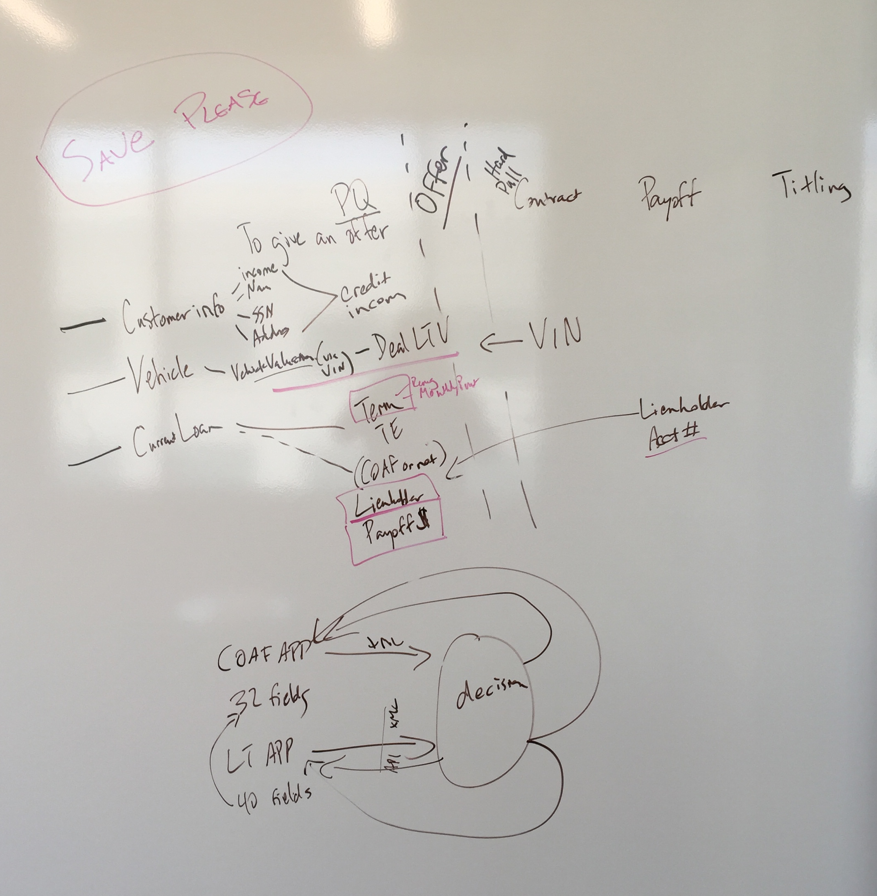
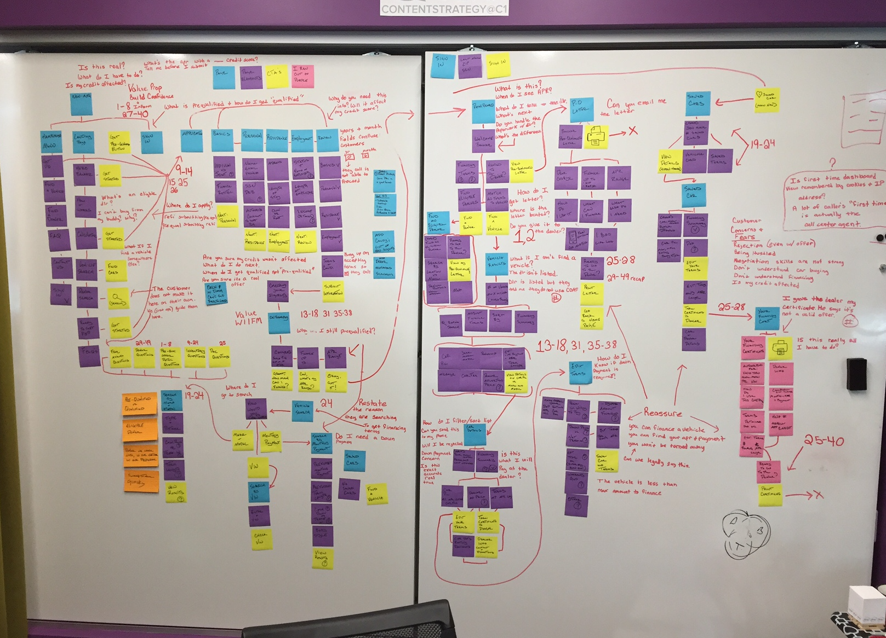
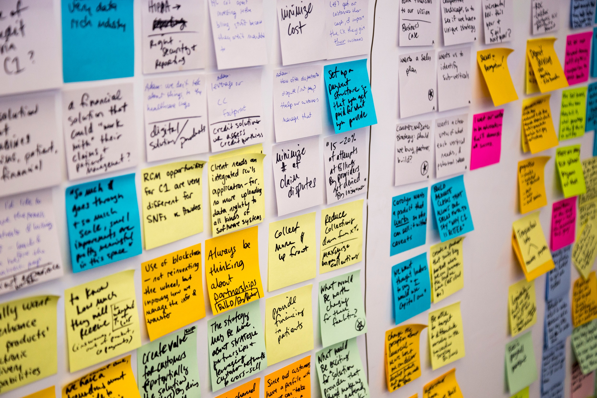
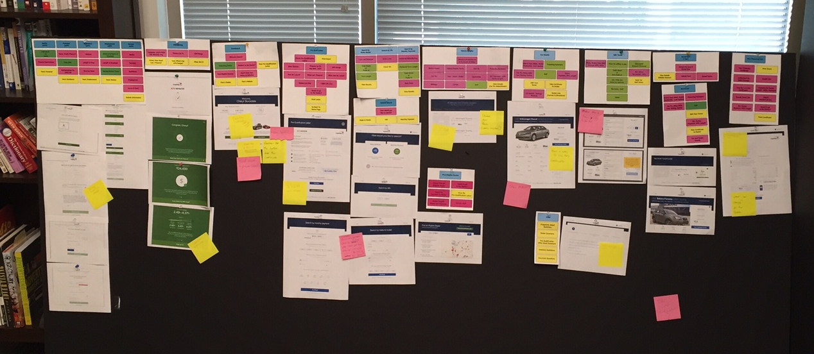
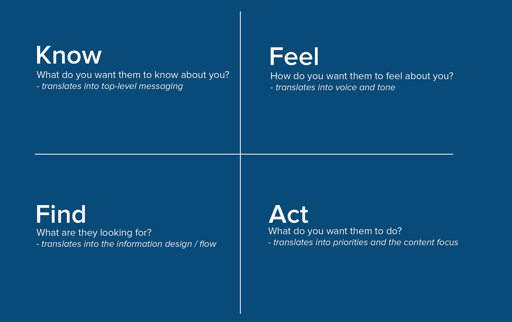
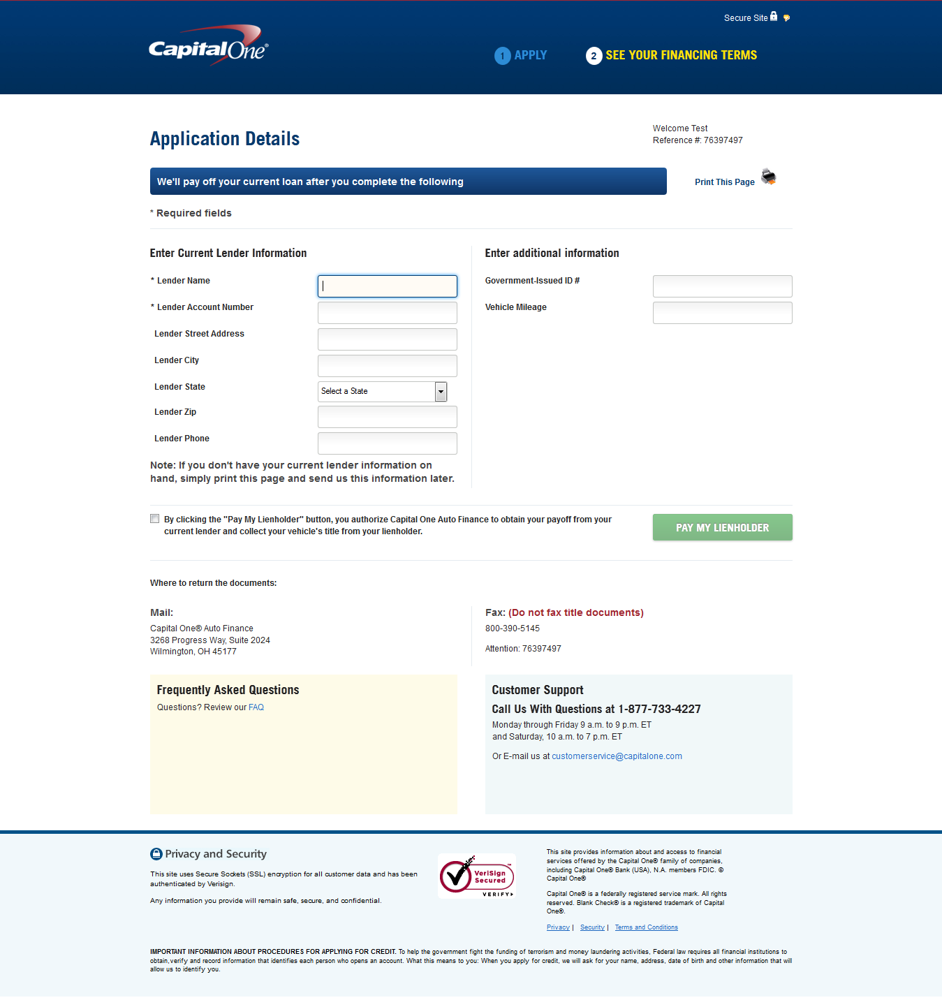
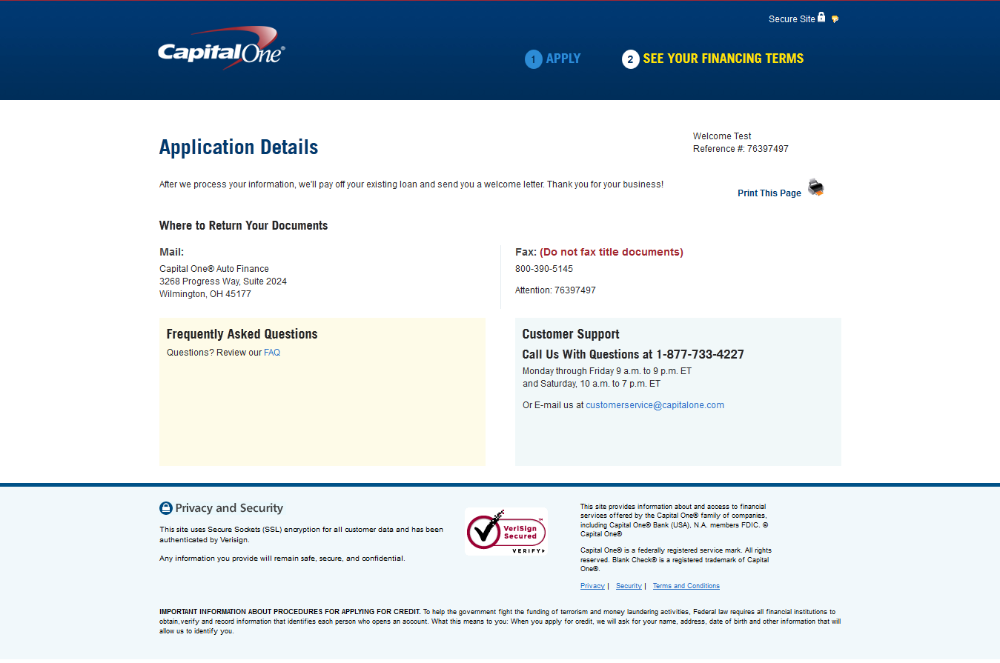
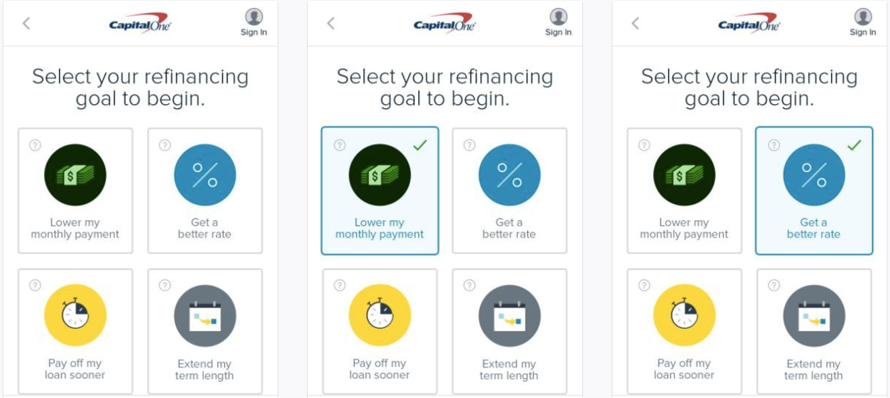
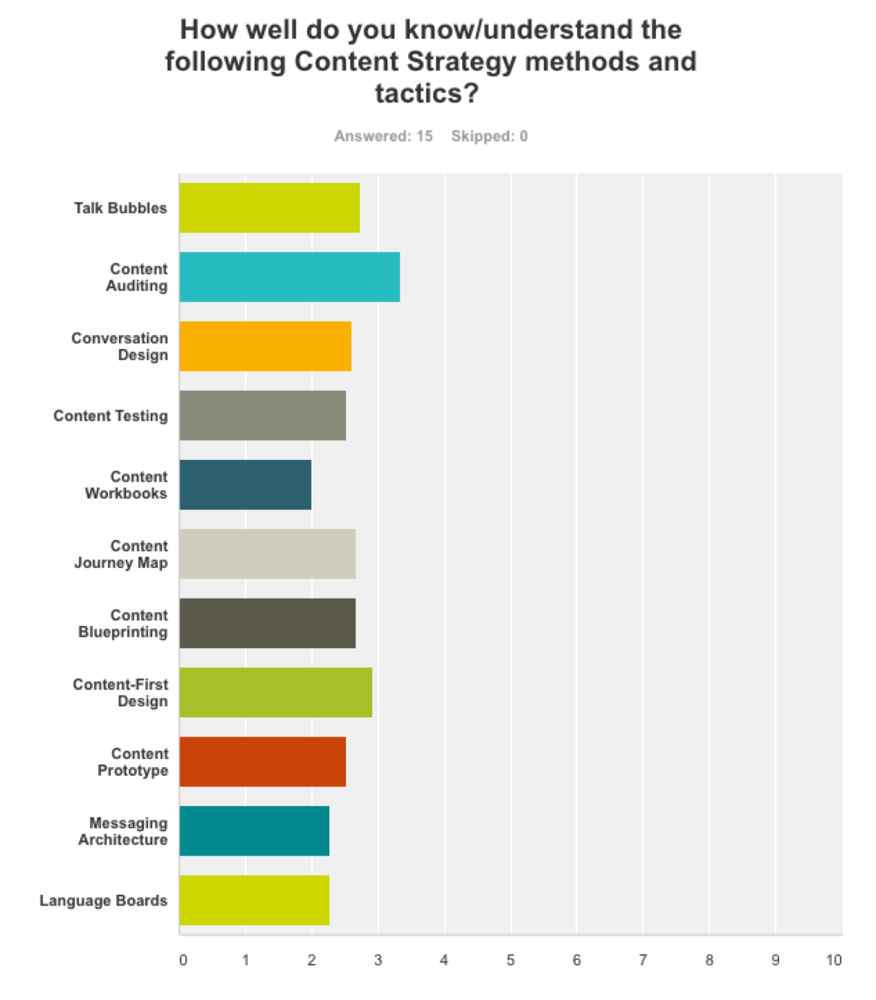
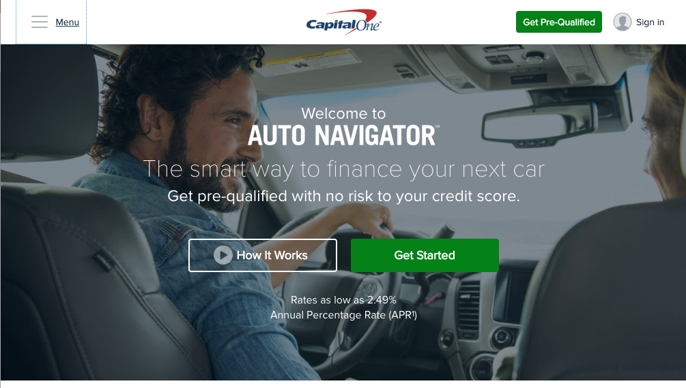

What you talkin' 'bout — balance? Reimagining the Capital One auto loan experience to help customers understand where they stood and prevent end-of-loan surprises.
Users who paid late on their Capital One auto loans could end up with an unexpected balance at the end of their loan term — money that was rarely recovered and created a terrible customer experience. The ask: help users understand where they stood with their loan and stop the end-of-term surprise before it happened.
The Problem
User confusion — Customers didn't understand how simple interest loans worked, leading to late payments and surprise end-of-loan balances.
Clunky experience — The existing tracker was confusing, long-winded, and lacking empathy for customers who were behind.
Business impact — Unpaid end-of-loan balances meant lost revenue and lost future customers.
My Process
Gain insight — Empathy research, market research, user testing, and baseline content testing to understand the real problem.
Define the problem — Research analysis, needs analysis, and "How might we…" questions to frame the opportunity.
Define the audience — Who are our customers? What do they like, hate, need, and fear? What makes them tick?
Content audit — Assessed what we were currently communicating: was it empathetic, clear, and contextually relevant? Did it follow the three principles — Natural Language, Contextually Relevant, Use Case Specific?
The Strategy
Reimagine the entire experience — New user flows, new UI, new interaction treatments, and entirely new content.
Know / Feel / Find / Act framework — Built a content framework to ensure every message answered what users needed to know, how we wanted them to feel, what they were looking for, and what we wanted them to do.
Empathetic language — Rewrote all content to be warm and encouraging when customers were ahead, and clear and supportive when they were behind — never shaming.
Simple interest education — Created an explainer video and in-app tips to help customers understand how their loan actually worked.








1 / 8
The Result
15,000 customers paid ahead at least 2 months within the first 3 months.
11% decrease in call center volume.
80,000 new on-time customers added to the books.
5-point NPS bump — and glowing customer feedback.
"I love the advice about paying the loan off." / "I love that I can see my 10-day payoff on the app!" / "WOOP WOOP... PAID IN FULL."
Deep Dive 02
Feedback Tracker
From generic surveys to targeted insight: Redesigning how Capital One collected customer feedback — then scaling the heck out of it.
Capital One was collecting feedback — but not the right kind. Responses were generic, lacked context, and couldn't be tied to any specific feature. The ask: build a targeted feedback system for a new mobile feature, use it to quickly address customer concerns and reduce call volume, then scale it across the product.
The Problem
Low-quality feedback — Users were providing little feedback, and what they did share lacked enough context to act on.
No feature attribution — Couldn't tie feedback to specific parts of the product, making it impossible to prioritize fixes.
Survey fatigue — Existing NPS questions were long, clinical, and easy to ignore.
The Strategy
Content audit first — Analyzed the existing NPS questions for clarity, empathy, and relevance before designing anything new.
Contextual triggers — Designed feedback prompts that fired at the right moment in the right feature, so responses were always tied to a specific experience.
Conversational language — Rewrote survey copy using natural, human language that felt like a quick conversation rather than a formal questionnaire.
Scalable system — Built a reusable feedback framework that could be dropped into any feature — then scaled it across the product.


1 / 3
The Result
Higher response rates — Contextual, conversational prompts dramatically increased the volume of usable feedback.
Actionable insight — Product teams could now tie specific feedback to specific features and make faster, data-driven decisions.
Scalable blueprint — The framework became the standard feedback model rolled out across Capital One's mobile product suite.
Additional Work
Auto Refinance & Auto Navigator
Content-first design for Capital One's auto finance products — from conversation prototypes to landing page copy.
Across Capital One's auto finance suite, the challenge was the same: complex financial products wrapped in jargon-heavy, intimidating language. The work involved building conversation prototypes, co-creating content workbooks with design and product, and rewriting everything from application flows to landing pages using plain, human language.
The Approach
Content-first design — Worked from conversation prototypes before screens were built, ensuring the language shaped the experience rather than being squeezed in at the end.
Content workbooks — Co-created workbooks with designers and PMs defining conversation structure, ideal phrases, and navigation patterns for each flow.
Auto Navigator copy — Wrote and optimized landing page content for Capital One's Auto Navigator — a pre-qualification tool designed to feel low-risk and approachable for shoppers.
Plain language rewrites — Transformed dense legal and financial copy into clear, friendly language that reflected how real customers talked about their money.